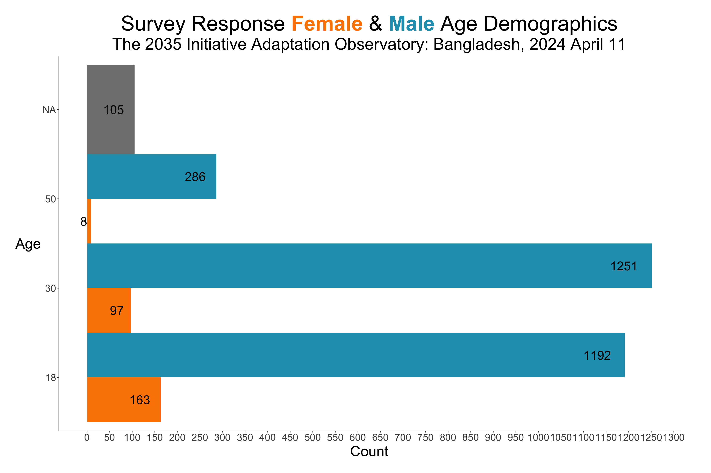
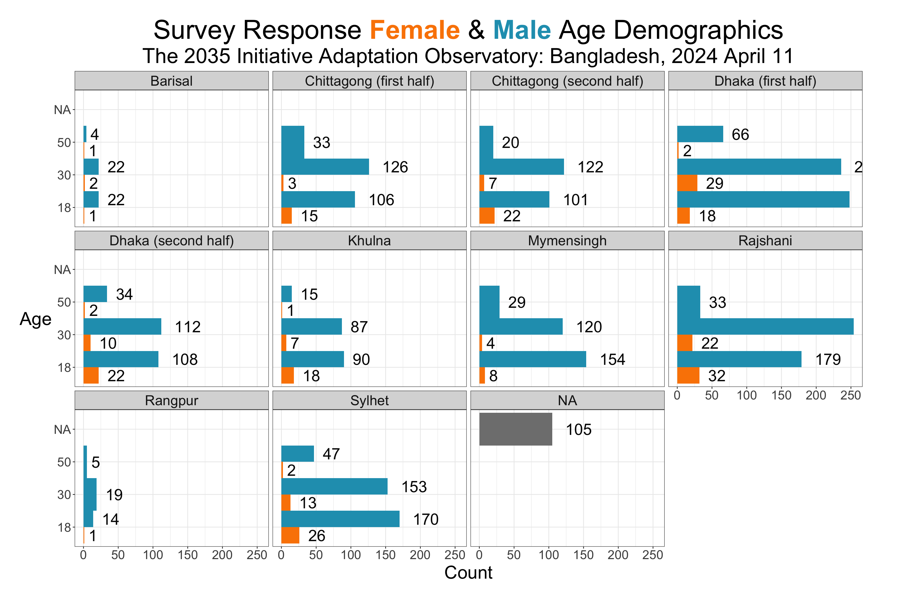
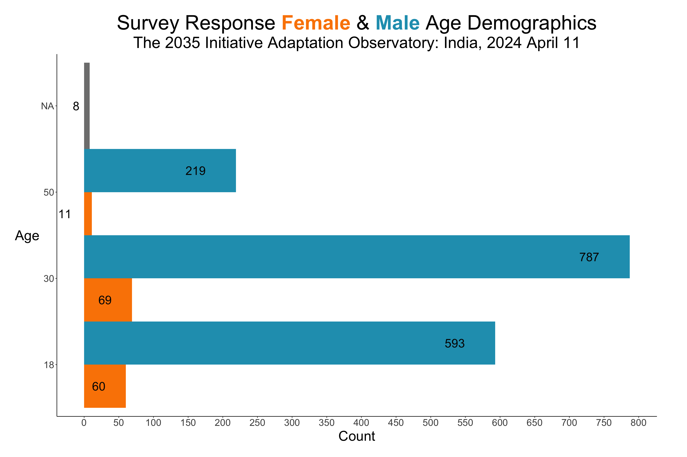
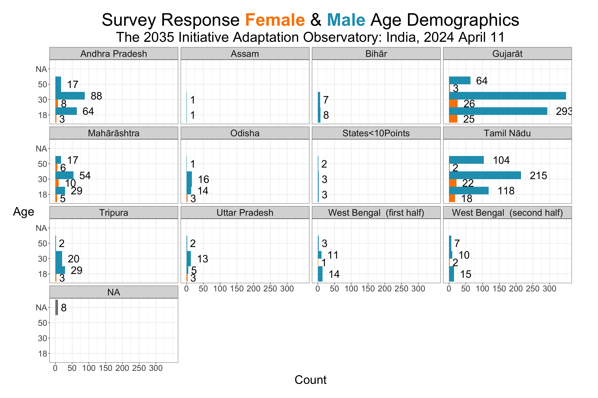

knitr::opts_chunk$set(echo =TRUE, message =FALSE, warning =FALSE)#..........................load packages.........................library(tidyverse) # load the tidyverse package to assist with data wrangling & cleaning library(patchwork) # load the patchwork package to assist in plot composition (displaying multiple data visualizations) library(showtext) # load the showtext to more easily use fontslibrary(here)library(leaflet)library(osmextract) library(units)library(sf)library(sfheaders)library(sp)library(raster)library(tmap)library(terra)library(stars)library(ggtext)library(units)
#head(bgd_responses)#str(bgd_responses)# to create a list of variables to subset#colnames(bgd_responses)# to get an idea of how many unique observations we have# the length is 3515, therefore our dataset of 4698 contains repeating observations# we'll use IPAddress to isolate unique participants # it's safe to double check these entrees with the age + gender columns to make sure multiple family members that are logging in from the same IPAddress aren't missedlength(unique(bgd_responses$IPAddress))
[1] 3515
Code
length(unique(bgd_responses$age))
[1] 6
Code
length(unique(bgd_responses$gender))
[1] 5
Code
length(unique(bgd_responses$region))
[1] 13
Code
# these lines are grouped by demographics of interest# top line relates to personal demographicsbgd_demos <- bgd_responses %>% dplyr::select(IPAddress, age, gender, region, LocationLatitude, LocationLongitude, demo_age, demo_gender,# impact of floods flood_year, housing_damage, property_loss, contact_authority, flood_close,# socioeconomic factors & resiliency / scarcity stay_residence, flood_prepared, housing_safe, enough_eat, move_rural_urban, demo_income, # sentiments climate_problem, trust_government) %>% janitor::clean_names() %>%mutate(location_longitude =as.numeric(location_longitude),location_latitude =as.numeric(location_latitude)) %>%# remove incomplete geolocationsfilter(complete.cases(location_latitude, location_longitude))# remove first two rowsbgd_demos <- bgd_demos[-c(1,2), ]#bgd_demos
Code
# these lines are grouped by demographics of interest# top line relates to personal demographicsind_demos <- ind_responses %>% dplyr::select(IPAddress, age, gender, region, LocationLatitude, LocationLongitude, demo_age, demo_gender,# impact of floods flood_year, housing_damage, property_loss, contact_authority, flood_close,# socioeconomic factors & resiliency / scarcity stay_residence, flood_prepared, housing_safe, enough_eat, move_rural_urban, demo_income, # sentiments climate_problem, trust_government) %>% janitor::clean_names() %>%mutate(location_longitude =as.numeric(location_longitude),location_latitude =as.numeric(location_latitude)) %>%# remove incomplete geolocationsfilter(complete.cases(location_latitude, location_longitude))# remove first two rowsind_demos <- ind_demos[-c(1,2), ]#ind_demos
Analysis
BGD
Code
colors <-c('#fb8500', '#219ebc','#023047')# Define the title text with HTML tagsbar_title <-"Survey Response <span style='color:#fb8500;'>**Female**</span> & <span style='color:#219ebc;'>**Male**</span> Age Demographics"bar_subtitle <-"The 2035 Initiative Adaptation Observatory: Bangladesh, 2024 April 11"# Plottingbgd_demos %>%ggplot(aes(fill = gender)) +geom_bar(aes(x = age), position ="dodge", width =1) +geom_text(stat ="count",aes(x = age,y = ..count..,label = ..count..),position =position_dodge(width =1),vjust =0.5,hjust =1.5,size =8,color ="grey2") +# Adjust text position and appearancelabs(title = bar_title,subtitle = bar_subtitle, x ="Age",y ="Count") +scale_fill_manual(values = colors) +# Set custom colorstheme_classic() +theme(plot.title =element_markdown(size =38,hjust =0.5),plot.subtitle =element_markdown(size =30,hjust =0.5),# Increase facet wrap title sizestrip.text =element_text(size =20),axis.title.x =element_text(size =26,angle =0,vjust =0.5),axis.title.y =element_text(size =26,angle =0,vjust =0.5),axis.text.x =element_text(size =18),axis.text.y =element_text(size =18),legend.position ="none",# space on the side of the plot#plot.margin = margin(t = 1, r = 1, b = 1, l = 1, "cm")plot.margin =unit(c(t =1,r =2,b =1,l =1),"cm") ) +scale_y_continuous(breaks =seq(0, 3000, by =50)) +# Increase y-axis tick markscoord_flip()

Code
# Plottingbgd_demos %>%ggplot(aes(fill = gender)) +geom_bar(aes(x = age), position ="dodge", width =1) +geom_text(stat ="count",aes(x = age,y = ..count..,label = ..count..),position =position_dodge(width =1),vjust =0.5,hjust =-0.5,size =8,color ="grey2") +# Adjust text position and appearancelabs(title = bar_title,subtitle = bar_subtitle, x ="Age",y ="Count") +scale_fill_manual(values = colors) +# Set custom colorstheme_bw() +theme(plot.title =element_markdown(size =38,hjust =0.5),plot.subtitle =element_markdown(size =30,hjust =0.5),# Increase facet wrap title sizestrip.text =element_text(size =20),axis.title.x =element_text(size =26,angle =0,vjust =0.5),axis.title.y =element_text(size =26,angle =0,vjust =0.5),axis.text.x =element_text(size =18),axis.text.y =element_text(size =18),legend.position ="none",# space on the side of the plot#plot.margin = margin(t = 1, r = 1, b = 1, l = 1, "cm")plot.margin =unit(c(t =1,r =2,b =1,l =1),"cm") ) +scale_y_continuous(breaks =seq(0, 300, by =50)) +# Increase y-axis tick markscoord_flip() +# Flip coordinatesfacet_wrap(~region)

IND
Code
#fig.height=20, fig.width=28# Define the title text with HTML tagsbar_title <-"Survey Response <span style='color:#fb8500;'>**Female**</span> & <span style='color:#219ebc;'>**Male**</span> Age Demographics"bar_subtitle <-"The 2035 Initiative Adaptation Observatory: India, 2024 April 11"# Plottingind_demos %>%ggplot(aes(fill = gender)) +geom_bar(aes(x = age), position ="dodge", width =1) +geom_text(stat ="count",aes(x = age,y = ..count..,label = ..count..),position =position_dodge(width =1),vjust =0.5,hjust =2.5,size =8,color ="grey2") +# Adjust text position and appearancelabs(title = bar_title,subtitle = bar_subtitle, x ="Age",y ="Count") +scale_fill_manual(values = colors) +# Set custom colorstheme_classic() +theme(plot.title =element_markdown(size =38,hjust =0.5),plot.subtitle =element_markdown(size =30,hjust =0.5),# Increase facet wrap title sizestrip.text =element_text(size =20),axis.title.x =element_text(size =26,angle =0,vjust =0.5),axis.title.y =element_text(size =26,angle =0,vjust =0.5),axis.text.x =element_text(size =18),axis.text.y =element_text(size =18),legend.position ="none",# space on the side of the plot#plot.margin = margin(t = 1, r = 1, b = 1, l = 1, "cm")plot.margin =unit(c(t =1,r =2,b =1,l =1),"cm") ) +scale_y_continuous(breaks =seq(0, 3000, by =50)) +# Increase y-axis tick markscoord_flip()

Code
# Plottingind_demos %>%ggplot(aes(fill = gender)) +geom_bar(aes(x = age), position ="dodge", width =1) +geom_text(stat ="count",aes(x = age,y = ..count..,label = ..count..),position =position_dodge(width =1),vjust =0.5,hjust =-0.5,size =8,color ="grey2") +# Adjust text position and appearancelabs(title = bar_title,subtitle = bar_subtitle, x ="Age",y ="Count") +scale_fill_manual(values = colors) +# Set custom colorstheme_bw() +theme(plot.title =element_markdown(size =38,hjust =0.5),plot.subtitle =element_markdown(size =30,hjust =0.5),# Increase facet wrap title sizestrip.text =element_text(size =20),axis.title.x =element_text(size =26,angle =0,vjust =0.5),axis.title.y =element_text(size =26,angle =0,vjust =0.5),axis.text.x =element_text(size =18),axis.text.y =element_text(size =18),legend.position ="none",# space on the side of the plot#plot.margin = margin(t = 1, r = 1, b = 1, l = 1, "cm")plot.margin =unit(c(t =1,r =2,b =1,l =1),"cm") ) +scale_y_continuous(breaks =seq(0, 300, by =50)) +# Increase y-axis tick markscoord_flip() +# Flip coordinatesfacet_wrap(~region)

Density Distribution of Gender based on Age & Colored by Region (facet wrap by Gender)